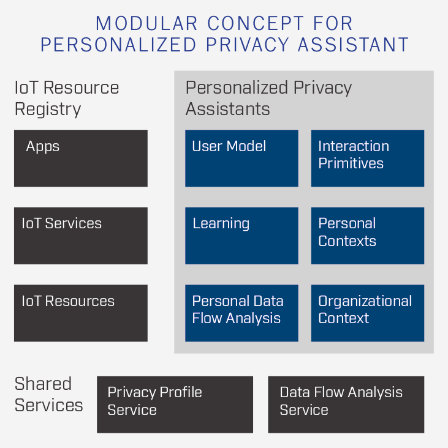
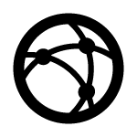

Daniel Smullen
Dr. Daniel Smullen is currently an Applied Scientist working at Amazon with devices and services teams to solve complex data privacy and security problems.
About Me
I'm a proud alumni of Carnegie Mellon University Cylab, where I worked with the founders of the first (and only) Privacy Engineering academic program in the world as part of my doctoral and postdoctoral work. My unique academic training and R&D career has led to patents and a strong track record of publications in top-tier venues within the privacy engineering, PETs, ML/AI, NLP, and HCI domains. My work has given me the privilege of partnering with policymakers, regulators, government/military sponsors, and industry.
My daily duties require me to wear many hats; consultant, problem-solver, scientist, engineer, and thought leader. My work spans Usable Privacy and Security, incorporating mixed-methods methodologies seen in behavioral economics, user-centered design, requirements engineering, applied machine learning, and empirical software engineering. I solve social and technical problems using interdisciplinary research methods. My goal is to help the world develop more usable, secure, privacy-preserving, trustworthy software.
My main areas of interest include privacy, security, responsible AI, autonomous systems, software architecture, and the Internet of Things.
I speak, read, and write in English, German, and French.
Awards
| Title | Institution | Year |
|---|---|---|
| Distinguished Research Award | 13th Symposium On Usable Privacy and Security | 2017 |
| Hima and Jive Fellowship in Computer Science for International Students | Carnegie Mellon University | 2017 |
| Ready-Set-Transfer Technology Transfer Competition Award | 23rd IEEE International Requirements Engineering Conference | 2015 |
| ECSE Engineering Design Challenge Winner | University of Ontario Institute of Technology | 2014 |
| President’s Honours List | University of Ontario Institute of Technology | 2014 |
| NSERC Undergraduate Student Research Award | University of Ontario Institute of Technology | 2013 |
| President’s Honours List | University of Ontario Institute of Technology | 2013 |
| President’s Honours List | University of Ontario Institute of Technology | 2012 |
| Dean’s Honours List | University of Ontario Institute of Technology | 2011 |
| Engineers Without Borders Design Challenge Winner | McMaster University | 2008 |
| DaVinci Engineering Design Challenge Winner | University of Toronto | 2007 |
Employment History
Projects
|

IoT Resource RegistrySummer 2017The IoT Resource Registry helps IoT service providers to connect with their users, offering a unified way for information and choice on IoT services and resources. This project is a part of the larger Personalized Privacy Assistant project. Supervisor: Dr. Norman Sadeh, Carnegie Mellon University |
Eddy: A Privacy Requirements Specification LanguageSummer 2016Eddy is a privacy requirements specification language that privacy analysts can use to express requirements over acts to collect, use, transfer and retain personal and technical information. The language uses a simple SQL-like syntax to express whether an action is permitted or prohibited, and to restrict those statements to particular data subjects and purposes. The Eddy specifications are compiled into Description Logic to automatically detect conflicting requirements and to trace data flows within and across specifications. Each specification can describe an organization's data practices, or the data practices of specific components in a software architecure. Supervisor: Dr. Travis Breaux, Carnegie Mellon University |

Non-Local Interferometric SAR Parameter EstimatorSummer 2015Synthetic aperture radar (SAR) or interferometric SAR (InSAR) images suffer from granular speckle noise, which must be removed a posteriori to make images suitable for analysis. We implemented several enhancements to Deledalle’s InSAR denoising filter (NL-InSAR) to gain leverage over the algorithm's inherent speed tradeoffs. Our results show quantitative and qualitative advances over the canon, as well as promising new research directions for further improvements. Our workstation- and supercluster-portable implementation allows high quality speckle noise reduction over full-sized UAVSAR images in a matter of minutes, versus weeks using the naïve algorithm. Supervisor: Dr. Razi Ahmed, Jet Propulsion Laboratory |
NL-InSAR with Gaussian-Laplacian PyramidsSummer 2015Non-local filters are particularly well-suited for reducing noise in interferometric Synthetic Aperture Radar (InSAR) images due to their ability to preserve fine structures in the images without compromising resolution. Great strides have been made in improving non-local filtering techniques for InSAR images, but many of these techniques introduce an artifact known as the canvas effect. In this work, we implemented a novel method for eliminating the canvas effect that is based on Gaussian-Laplacian image pyramids. In particular, we modify the NL-InSAR algorithm to include an image pyramiding step in order to improve the estimation of reflectivity, interferometric phase, and coherence. Supervisor: Dr. Razi Ahmed, Jet Propulsion Laboratory |
Incident Recognition and Intelligence System (IRIS)Winter 2014IRIS is a fully integrated intelligence management system with a frontend that displays road conditions and captured incident videos, combined with a computer vision backend that performs autonomous, scalable highway surveillance and statistical aggregation. IRIS won first place in the UOIT Capstone ECSE Engineering Design Challenge 2014. Supervisor: Dr. Shahryar Rahnamayan, Associate Professor, UOIT Special thanks to Dr. Baher Abdulhai and Asmus Georgi at University of Toronto, and Steve Spadafora at MTO for their funding and collaboration. |
Automated Marking System (AMS)Winter 2014AMS was built using Rails for UOIT as a means to quickly create, disseminate, and automatically mark introductory programming courses, providing automatic cheating detection and code quality metrics to students. The software automatically compiles, executes, and evaluates students' submissions in a protected environment. AMS provides instant feedback to students and administrators on the quality of submissions after undergoing dynamic and static analysis, and is integrated with an automatic testing framework for both evaluation and validation. Supervisor: Dr. Kamran Sartipi, Associate Professor, UOIT |
|

Policy IDE, TOSServ, Finger2IPv6Summer 2013These three projects were the culmination of work completed funded by an NSERC Undergraduate Research Award. All three are related to implementing and facilitating policy programming in wireless sensor networks based on TinyOS. They were published and presented at EUSPN-2013, as well as posted on the Stanford TinyOS community Wiki. These projects are also available in branches on GitHub. Supervisor: Dr. Ramiro Liscano, Associate Dean, UOIT |
Military Logistics Management System (MLMS)Spring 2013Military logistics management and large-scale visualization system for UOIT ENGR3700 (Data Management Systems) course. Delivers supply and personnel information via an agile web interface using ASP.NET. Provides secure access to global logistics data at a glance through a Logistics Management View (LMV). Provides real-time battle space updates using Order of Battle (ORBAT) Imagery System. Supervisor: Dr. Eyhab Al-Masri, Senior Lecturer, UOIT |
sneakyFS File System Design and ImplementationWinter 2012sneakyFS is a UNIX file system which operates on a simulated hard disk. It uses a hybrid indexed and linked allocation method to efficiently use disk space, support large disks, lengthy directory trees, and large file sizes. It incorporates transparent encryption, journalling, and universal unique identifiers. It incorporates techniques which extend the functionality of the C language beyond its original scope of usage, including object oriented design principles by re-purposing C data structures and pointers. The project won distinction as "Best Project" in the UOIT ENGR 3950 (Operating Systems) course. Supervisor: Dr. Kamran Sartipi, Associate Professor, UOIT |
Datacenter Utilization Research StudySummer 2012Mission-critical datacenter utilization, availability, and performance assessment for SNC-Lavalin GIT risk management and infrastructure remediation. This study sought to determine the amount of work performed in dollars per hour on each critical server asset in the datacenter located at the West Mall campus, and specify a plan for infrastructure improvements based on the findings. Supervisor: M. Ross, Senior Vice-President, SNC-Lavalin Global Information Technologies |
Laboratory Information Management System (LIMS)Spring 2009Collaborative development on an ISO 9000 certified laboratory sample management software. Manages sample logging, categorization, and process queuing. Used in active laboratory production. Supervisor: Dr. John Emery, P.Eng., President, JEGEL |
2009 Trans-Canada Highway Rehabilitation GeoinformaticsSummer 2009In order to facilitate a large scale asphalt rehabilitation on the Trans-Canada Highway, spanning the section surrounding Banff for over 300km, large scale geoinformatics were required. These drawings detailed probe-hole locations, highway layout, and pavement remediation plans. Supervisor: Alain Duclos, P.Eng., Senior Engineer, JEGEL |
Refereed Publications
| Title | Publication | Links |
|---|---|---|
| Increasing Adoption of Tor Browser Using Informational and Planning Nudges | Proceedings on Privacy Enhancing Technologies (PoPETs) | |
| Informing the Design and Refinement of Privacy and Security Controls | KiltHub: Carnegie Mellon University Research Repository (Dissertations) | |
| Awareness, Adoption, and Misconceptions of Web Privacy Tools | Proceedings on Privacy Enhancing Technologies (PoPETs) | |
| Managing Potentially Intrusive Practices In The Browser: A User Centered Perspective | Proceedings on Privacy Enhancing Technologies (PoPETs) | |
| From Intent to Action: Nudging Users Towards Secure Mobile Payments | Sixteenth Symposium on Usable Privacy and Security (SOUPS) | |
| The Best of Both Worlds: Mitigating Trade-offs Between Accuracy and User Burden in Capturing Mobile App Privacy Preferences | Proceedings on Privacy Enhancing Technologies (PoPETs) | |
| MAPS: Scaling Privacy Compliance Analysis to a Million Apps | Proceedings on Privacy Enhancing Technologies (PoPETs) | |
| Natural Language Processing for Mobile App Privacy Compliance | AAAI Spring Symposium on Privacy-Enhancing Artificial Intelligence and Language Technologies | |
| Analyzing Privacy Policies at Scale: From Crowdsourcing to Automated Annotations | ACM Transactions on the Web | |
| Personalized Privacy Assistants for the Internet of Things: Providing Users with Notice and Choice | IEEE Pervasive Computing Journal | |
| Improving Security in Software Acquisition with Data Retention Specifications | US Navy Postgraduate School Acquisition Research Program Sponsored Report Series | |
| Privacy Risk in Cybersecurity Data Sharing | ACM 3rd International Workshop on Information Sharing and Collaborative Security (WISCS) | |
| Detecting Repurposing and Over-Collection in Multi-party Privacy Requirements Specifications | 23rd IEEE International Requirements Engineering Conference | |
| Toward Rapid Recertification Using Formal Analysis | US Navy Postgraduate School 12th Annual Acquisition Research Symposium | |
| Genetic Algorithm with Self-Adaptive Mutation Controlled by Chromosome Similarity | IEEE Congress on Evolutionary Computation (CEC 2014) | |
| Integrated Development Environment for Debugging Policy-based Applications in Wireless Sensor Networks | Procedia Computer Science (Elsevier) |
Posters & Talks
| Title | Item | Conference | Links and Resources |
|---|---|---|---|
| Personalized Privacy Assistant Project | Research Poster | US Federal Trade Commission PrivacyCon 2018 | |
| Assisting Users in a World Full of Cameras: A Privacy-aware Infrastructure for Computer Vision Applications | Research Poster | US Federal Trade Commission PrivacyCon 2017 | |
| A Privacy Assistant for the Internet of Things | Research Poster | 13th Symposium On Usable Privacy and Security (SOUPS 2017) | |
| Detecting Repurposing and Over-Collection in Multi-party Privacy Requirements Specifications | Conference Talk | 23rd IEEE International Requirements Engineering Conference (RE 2015) | |
| Towards Rapid Re-Certification Using Formal Analysis | Conference Talk | US Navy Postgraduate School 12th Annual Acquisition Research Symposium | |
| Genetic Algorithm with Self-Adaptive Mutation Controlled by Chromosome Similarity | Conference Talk | IEEE World Congress on Computational Intelligence (WCCI 2014), Evolutionary Computation Conference (CEC 2014) | |
| How Much Do We Reveal Through Metadata? An Assessment of Online Privacy | Preliminary Study Poster | IBM Consortium for Software Engineering Research (CSER 2013) | |
| Policy IDE... and lessons learned since. | Conference Talk | The 4th International Conference on Emerging Ubiquitous Systems and Pervasive Networks (EUSPN-2013) | |
| Facilitating the Internet of Things with Policy Programming | Research Poster | UOIT Undergraduate Research Showcase 2013 |